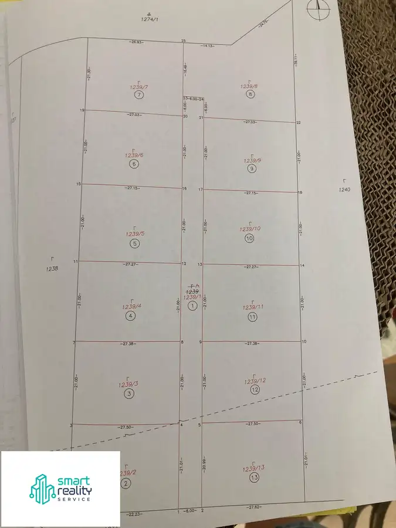
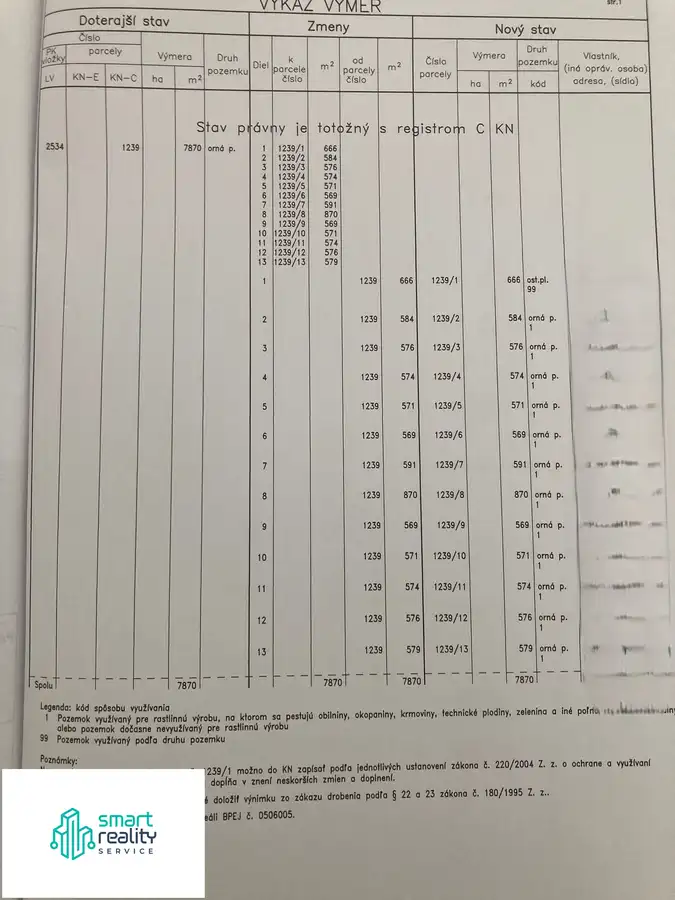

Investičný pozemok v Bzenici – projekt 12 parciel pre rodinné domy
Bzenica



- Plocha7870 m²
- VlastníctvoOsobné
O nehnuteľnosti
INVESTIČNÝ POZEMOK V BZENICI – PROJEKT 12 PARCIEL PRE RODINNÉ DOMYHĽADÁTE REÁLNU INVESTIČNÚ PRÍLEŽITOSŤ ? ALEBO PLÁNUJETE VLASTNÝ DEVELOPERSKÝ PROJEKT?Realitná kancelária Smart Reality Service vám exkluzívne ponúka na predaj rozsiahly, slnečný pozemok v obci Bzenica s celkovou výmerou 7 870 m2. Pozemok je ideálnou a bezpečnou investíciou pre developera, prípadne skupinu investorov, ktorí chcú zhodnotiť kapitál prostredníctvom výstavby individuálneho bývania (IBV).Regionálny ekonomický impulz: Lokalita získava na atraktivite vďaka správe, že spoločnosť Slovalco v Žiari nad Hronom opäť spúšťa výrobu. Tento krok prináša do regiónu nové pracovné príležitosti, čo priamo zvyšuje dopyt po novom bývaní a z dlhodobého hľadiska výrazne posilňuje bezpečnosť vašej investície.PRIPRAVENÝ PROJEKT: 12 STAVEBNÝCH PARCIEL + CESTAK nehnuteľnosti je už kompletne vypracovaný geometrický plán, ktorý pozemok rozdeľuje na 13 parciel:12 samostatných parciel určených na výstavbu rodinných domov.1 parcela vyčlenená ako prístupová cesta (parcela č. 1239/1), ktorá sa bude deliť v spravodlivom pomere 1/12 ku každému jednému pozemku.Status pozemku: Pozemok sa nachádza v extraviláne, no je oficiálne zaradený do územného plánu obce Bzenica pre výstavbu rodinných domov (IBV). Odpadá vám tak dlhé a neisté vyjednávanie so samosprávou o zmene funkčného využitia územia.INŽINIERSKE SIETE A INFRAŠTRUKTÚRAElektrina, voda, plyn: Nachádzajú sa v tesnej blízkosti pozemku (cca 100 metrov od posledného obývaného domu).Kanalizácia: V územnom pláne je s kanalizáciou plne počítané. Obec Bzenica už úspešne získala štátnu dotáciu na projekt kanalizácie a momentálne prebieha proces pred spustením samotného čerpania financií. LOKALITA A DOPRAVNÁ DOSTUPNOSŤPozemok je celodenne slnečný a strategicky umiestnený z pohľadu logistiky:Rýchle napojenie na rýchlostnú cestu R1 zaručuje okamžitú dostupnosť do okolitých miest.Výborné vlakové a autobusové spojenie.Kompletná občianska vybavenosť v tesnej blízkosti – okresné mestá Žarnovica a Žiar nad Hronom sú vzdialené len pár minút jazdy autom. PREČO INVESTOVAŤ PRÁVE DO TOHTO PROJEKTU?Tento pozemok nepredstavuje len „pôdu“, ale hotovú biznis príležitosť, kde eliminujete riziko prešľapovania na mieste. Geometrické rozdelenie a územný plán sú vyriešené – stačí prebrať projekt a začať s budovaním infraštruktúry.Cena : 25€/m2 . Predaj pozemku len ako celok . Viac info v RKNestrácajte čas hľadaním komplikovaných pozemkov bez schválenia obce. Pre viac informácií, nahliadnutie do geometrického plánu alebo dohodnutie obhliadky ma kontaktujte:Marta Hrmová – Smart Reality ServiceTel.: 0905 470 614E-mail: marta@smartrealityservice.skWeb: www.smartrealityservice.sk
Parametre
- Druh
- Pozemok pre rodinné domy
- Dátum zverejnenia
- 11. 08. 2026
- Plocha pozemku
- 7870 m²
- Terén pozemku
- Rovinatý
- Typ
- Predaj
- Vlastníctvo
- Osobné
- Územie
- Extravilán